Imagen futura
En desarrollo
Salud Visual
Fórmula en desarrollo para acompañar el bienestar ocular y el envejecimiento saludable.
Próximamente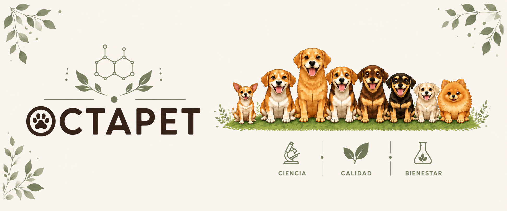
Nuestros productos
Fórmulas desarrolladas a partir de necesidades reales para acompañar la movilidad, la nutrición, la piel, el pelaje y el bienestar diario de perros y gatos.
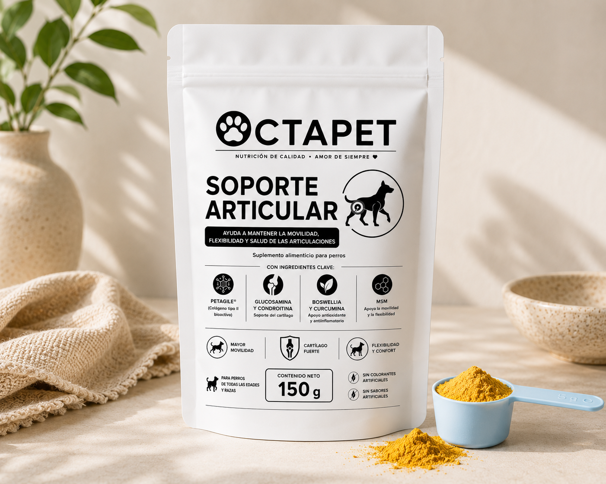
Fórmula en polvo para acompañar la movilidad, el confort y el bienestar articular diario.
Conocer producto →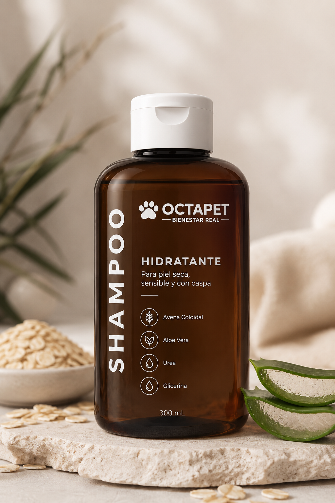
Limpieza suave para perros con piel seca, sensible o con tendencia a descamación.
Conocer producto →Shampoo de limpieza práctica y accesible para mantener el pelaje limpio y fresco.
Conocer producto →Ayuda a mantener el pelaje suave, brillante, manejable y fácil de cepillar.
Conocer producto →Complemento nutricional pensado para perros con tendencia al sobrepeso.
Conocer producto →Fórmula en desarrollo para acompañar el bienestar ocular y el envejecimiento saludable.
PróximamenteLimpieza suave formulada especialmente para la piel y el pelaje felino.
Conocer producto →Suplemento diario con taurina, omega 3 y nutrientes seleccionados para apoyar su bienestar, piel y pelaje.
Conocer producto →Complemento nutricional pensado para apoyar el manejo del peso corporal en gatos.
Conocer producto →Conoce a la manada
Octapet nació de la vida con ocho perros que nos inspiraron a buscar algo mejor para ellos. Al no encontrar en el mercado productos que realmente nos convencieran por su enfoque, formulación o calidad, decidimos crear una marca pensada desde el bienestar real de perros y gatos.
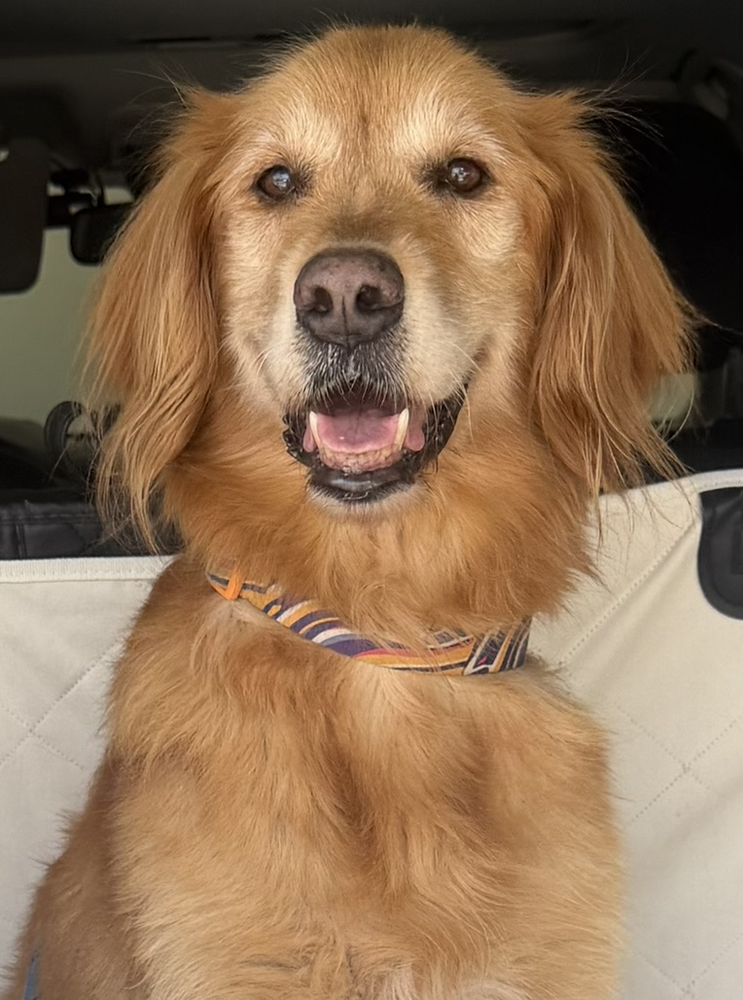
La eterna cachorra. A sus 11 años sigue corriendo y jugando, y fue una de las principales inspiraciones detrás de nuestro soporte articular.
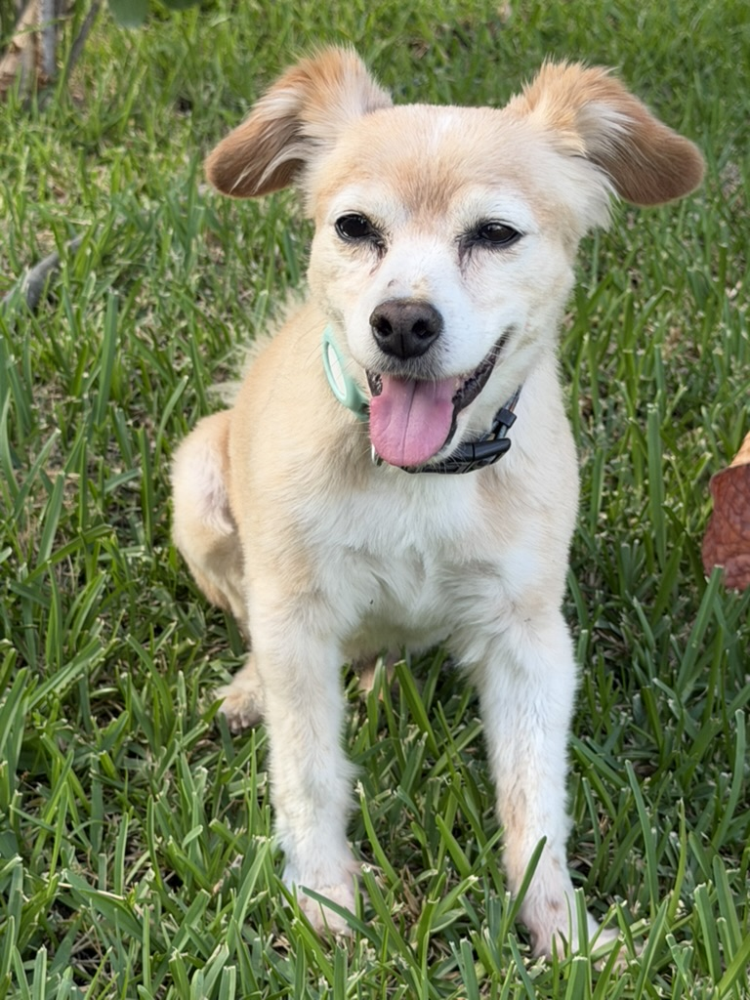
El mero mero de la manada. Lo encontramos en un estacionamiento y su pancita delicada nos inspiró a pensar en productos mejor tolerados para perros sensibles.
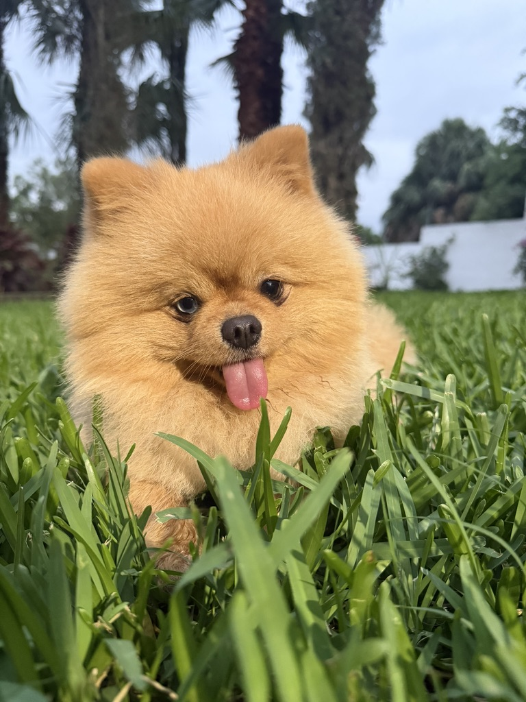
El terremoto de la casa. Su energía, sus travesuras y la necesidad de bañarlo seguido inspiraron el desarrollo de nuestro shampoo.
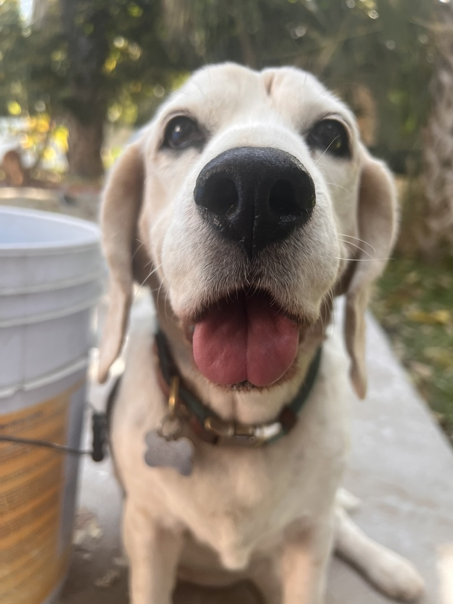
Adoptada, tragona de tiempo completo y capaz de comerse un costal entero si la dejas. Ella inspira nuestra línea para control de peso y nos recuerda que hasta los perros de raza pueden ser abandonados.
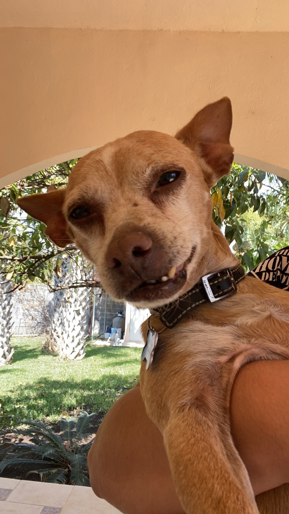
Adoptado, noble y un poquito chuequito. En la manada le toca aguantar bullying, pero también fue quien nos demostró que un suplemento bien hecho sí puede convencer hasta al más mañoso para comer.
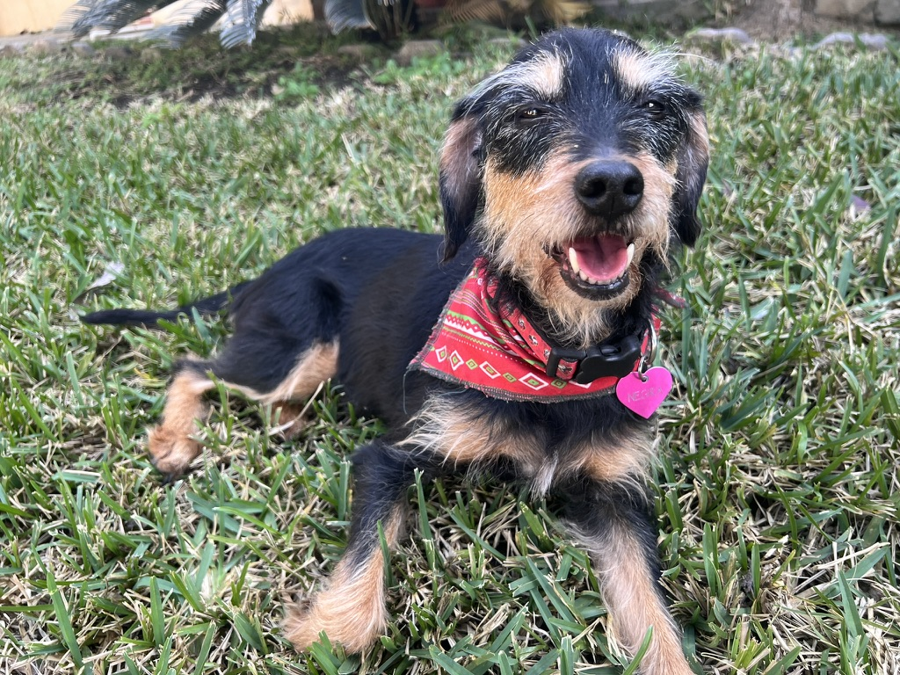
Rescatada y valiente. Después de perderse tras una adopción fallida, volvió a casa y hoy también nos inspira a pensar en el cuidado de perritos con huesitos delicados.
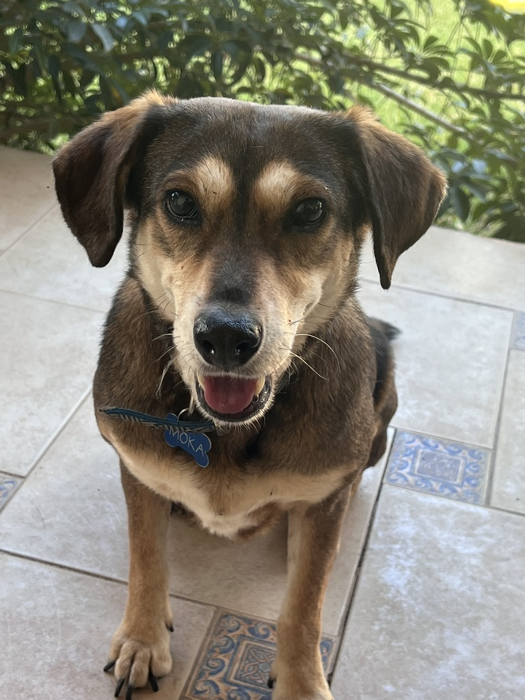
Adoptada, de mirada preciosa y corazón noble. Moka es paz pura dentro de la manada, pero cuando está feliz lo deja clarísimo con sus zoomies y su ya clásica forma de aventarse como costal de papas.
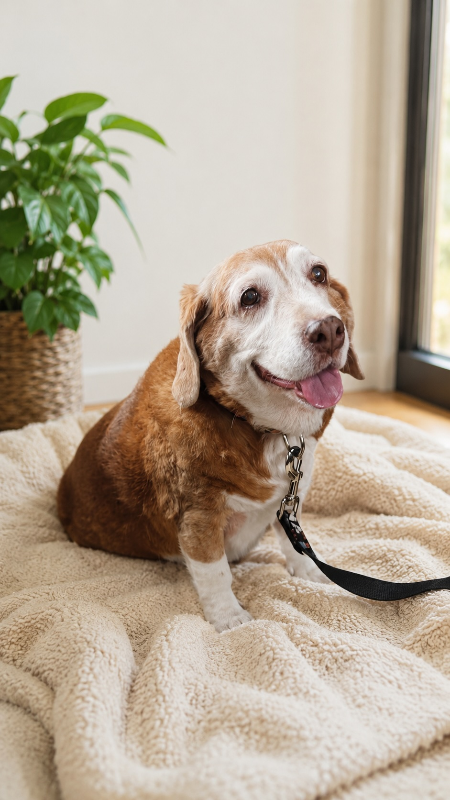
La alfa de la manada. Tranquila, fuerte y profundamente especial, Gordi nos acompaña en la memoria todos los días y sigue siendo parte de la inspiración detrás de Octapet.
Sobre Octapet
Octapet nació de la vida con ocho perros que nos enseñaron a ver el bienestar desde lo cotidiano: la movilidad, la piel, el estómago sensible, el paso del tiempo y todo lo que implica cuidar de verdad a quienes forman parte de la familia.
Al no encontrar en el mercado productos que realmente nos convencieran por su enfoque, formulación, calidad o precio, decidimos crear una marca pensada desde sus necesidades reales. Así nace Octapet: una línea de productos para perros y gatos con fórmulas prácticas, ingredientes seleccionados y un compromiso claro con ofrecer calidad a un precio justo.
Contacto
Si quieres conocer más sobre nuestros productos, resolver alguna duda o seguir de cerca lo que estamos construyendo, aquí nos encuentras.